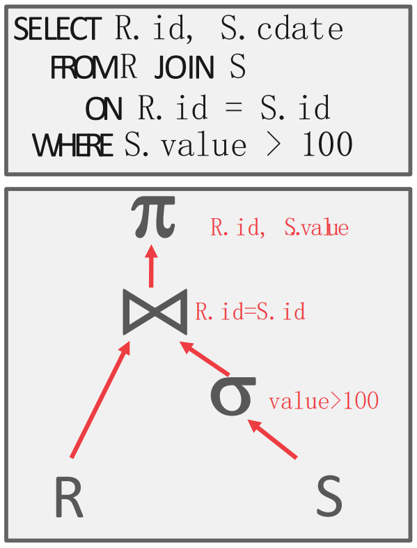
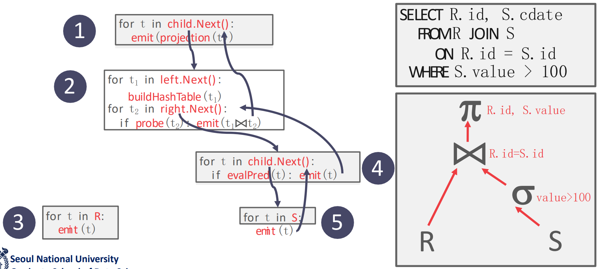
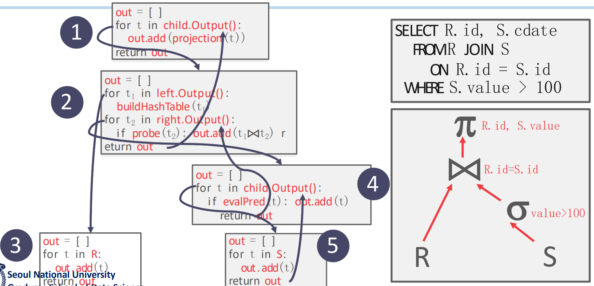
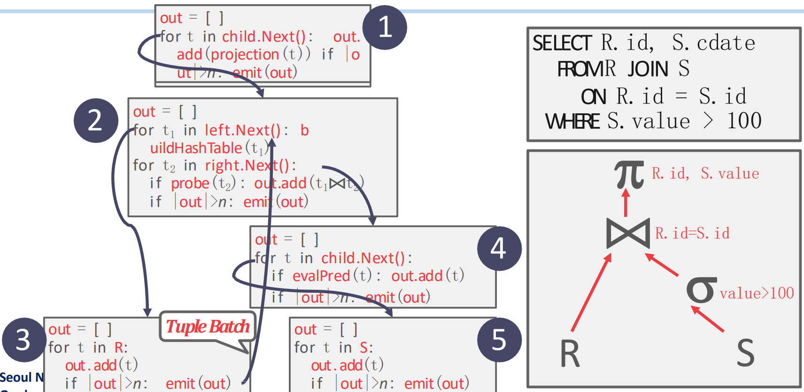
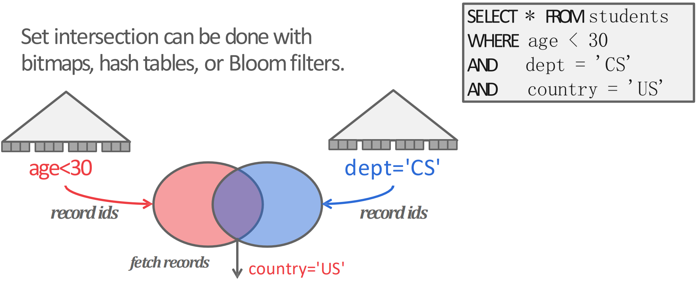
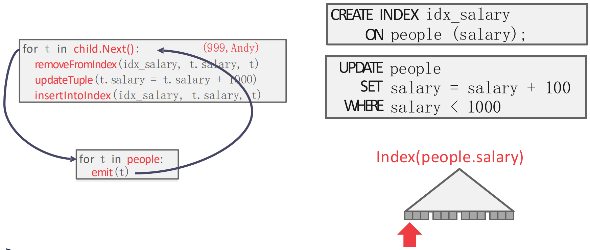
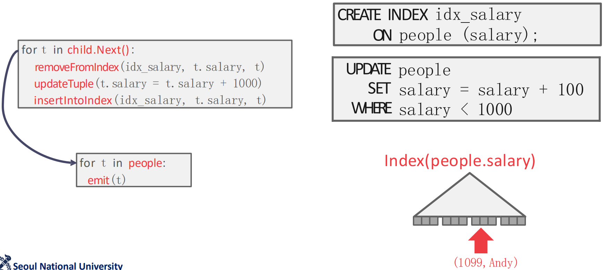
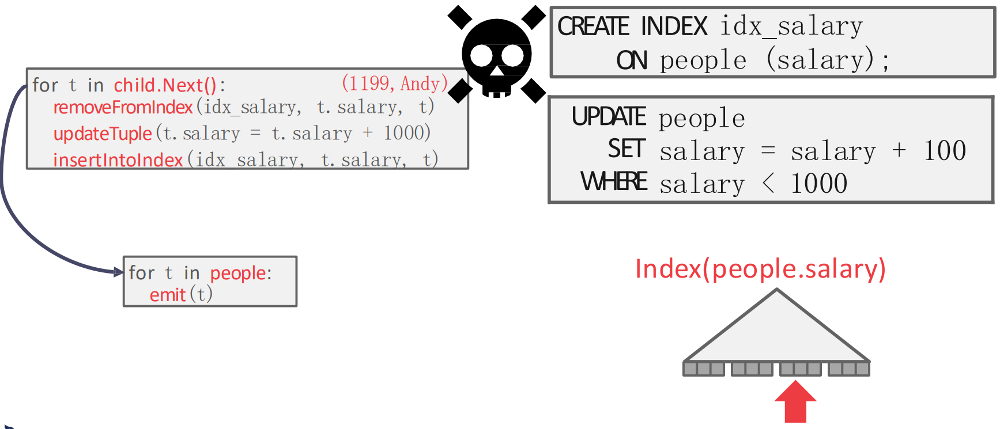
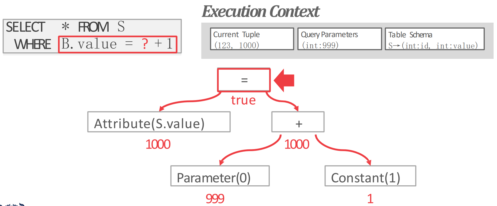

서울대학교 데이터사이언스대학원 정형수 교수님의 "데이터사이언스 응용을 위한 빅데이터 및 지식 관리 시스템" 강의를 필기한 내용입니다.
Query Plan

- 수없이 얘기했지만, Query 는 Plan tree 라는 것으로 변형된다.
Processing Models
- Processing model 은 어떤 방식으로 query plan tree 의 각 node 들이 데이터를 받아 전달할 것이냐? 에 대한 것이다.
Iterator Model

- Tuple 하나를 처리할 때마다 Query plan tree 를 traverse 하는 것.
- 이 방식은 좀 비효율적인것처럼 보일 수 있지만 사용자가 볼 때는 결과가 점진적이지만 빠르게 나와 interactive 하다는 장점이 있다
- Volcano 혹은 Pipeline model 이라고 한다.
- 각 query execution (query plan tree node) 은
- 우선 모든 node 에
next()method 가 강제되어서 본인의next()에서는 child 의next()를 호출해서 child 로부터 데이터를 받고, 본인이 처리한 뒤에,emit()으로 반환하는 구조를 가지고 있다. - 그리고 각
next()함수는 build phase 와 probe phase 로 나뉜다고 할 수 있다.- 그래서 필요한 자료구조 (가령 hash table) 을 build 한 다음, probe 를 해서 operator 의 조건에 맞는 놈이라면
emit()하는 것.
- 그래서 필요한 자료구조 (가령 hash table) 을 build 한 다음, probe 를 해서 operator 의 조건에 맞는 놈이라면
- 우선 모든 node 에
- Read table executor 에서는
next()에서 tuple 을 하나 하나 읽어emit()한다.- 그리고 이때는 데이터를 어떻게 접근하면 되는지 optimizer 가 다 처리방법을 적어준다고 한다
- 근데 매번 query plan tree 를 훑으면 반복적인 작업이 많아질 수 있다.
- 가령 build phase 를 매번 반복하고 있으면 너무 비효율적이자나?
- 따라서 각 node 당 어디까지는 작업을 끝냈는지를 memoize 하는 object 가 있다: 이것을 cursor 라고 한다.
- 물론 근데 plan node 에서 무조건 tuple 하나만을 처리하는 것은 아니다:
JOIN이나ORDER BY같은 애들은 child 의 모든 tuple 을 전부 받아서 처리한다.
Materialization Model

- 필요한 모든 데이터를 갖고와서 query plan tree 를 딱 한번만 타는 방법이다.
- 따라서 데이터의 사이즈가 크면 잘 안되고, 데이터 사이즈가 작을 때 효과적이다.
- 모든 결과를 “Materialize” 한다고 해서 Materialization model 인 것.
- 여기서는
next()로 tuple 하나하나 받는게 아니고 node 에 한번 방문해서 전부 처리한 다음에 저장해놓고 emit 하는걸로 끝난다 - 당연히 데이터 (혹은 중간 결과물) 의 사이즈가 크면 망한다
- 따라서 cursor 도 필요가 없다: 각 plan node 가 어디까지 했는지를 memoize 할 필요가 없기 때문.
- 적은 데이터 에 access 하는 경우에 좋고, OLTP 와 잘맞는다고 한다.
- OLAP 는 당연히 별로다.
Vectorized (Batch) Model

- Iterator, materialization 의 짬뽕
- Iterator 와 동일한데 tuple 단위가 아닌 (보통) page 단위로 처리해서 올려준다: page 가 batch 가 되는 셈.
- 대부분의 DB 에서 이 방식을 사용하고 있다.
- Page 단위이다보니 SIMD 를 적용하기 쉽고
- Columnar, OLAP 에서 특히 효과가 좋다: Materialization 보다 intermediate data 의 크기는 작은데, Iteration 에서보다 traverse 를 적게 하기 때문.
- 요즘은 per-tuple 보다 이런 batched 방식을 Volcano Model 이라고 한다고 한다.
Traverse Direction
- 위의 세 방식은 다 top down 방식으로 tree 를 내려가며 처리하고 거슬러 올라오는 형식이라고 할 수 있다.
- 근데 bottom-up 방식도 있다: 아래에서 처리하고 upcall 하는 것.
- 근데 upcall 이라는 것은 구현하기가 힘들다.
- Pipeline 으로 구현한다고 한다: leaf 마다 하나의 thread 가 할당되어서 처리하고 올라가되 node 가 합쳐지는데에서는 한 thread 가 정리되는 방식.
- 근데 뭐 잘 쓰이지는 않는 것 같다.
- Thread 간 sync 가 잘 맞아야 하고
- Thread communication 비용이 증가하는 등의 문제 때문.
Access Methods
- 이건 table data 를 어떤 방식으로 접근할 것이냐에 대한 것이다.
Sequential Scan
- 간단하다. Table 의 page 하나를 buffer pool 에서 가져와 각 tuple 을 iterate 하며 emit 할지 말지를 결정하는 것이다.
Cursor
- 위에서 말한 대로, Volcano model 에서는 어디까지 했냐를 memoize 하는 (context) object 인 cursor 가 있는데
- Sequential scan 에서는 이놈이 어느 page 의 어느 slot 까지 읽었는지를 tracking 한다.
- 하지만 index access 의 경우에는 SMO 가 발생할 수 있기 때문에 단순히 어디까지 읽었냐를 기억하는거로는 충분하지 않다.
- 그래서 재방문했을 때 parent 를 확인해서 이전과 동일한 parent 인지 알아내 SMO 가 일어났는지 확인한다.
- 만약에 SMO 되었으면 index root 에서부터 다시 시작한다: 이것을 cursor overhead 라고 한다고 하네
Zone Map
- 일정 구역을 zone 으로 잡아놓은 다음에 해당 zone 에 대한 summary 를 저장해 놓는다
- 여기에는 min, max, avg, 등등의 statistics 가 들어간다.
- 그 다음에 predicate execution 에서 이 summary 를 보고 해당되지 않는 zone 은 그냥 skip 하는 식으로 성능을 높일 수 있다
- 참고로 oracle 에서 처음 만들었다고 한다
- 근데 이 zone 사이즈를 어떻게 할지가 문제다. 왜냐면:
- 너무 작으면 만드는 의미가 없고
- 너무 크면 summary 가 너무 광범위해져 zone 을 skip 하기가 힘들어진다.
Late Materialization
- 뭐 이전에도 여러번 설명한 것처럼 RID + column 조금만 같이 들고다니는거를 말한다.
- 즉, 필요한 column data 를 intermediate tuple 에 포함시키는 것을 delay 하는 것이다.
Index Scan
- Index 가 이미 build 된 column 에 대한 predicate 를 처리할 때 index 가 여러개라면 (즉, column 도 여러개 predicate 도 여러개 index 도 여러개) 각 index 를 어떤 순서로 통과시켜야 할까?
- 당연히 predicate 으로 많이 걸러낼 수 있는 순서로 하는게 좋다.
Multi-Index Scan
- Predicate 에 필요한 column 들이 index 를 갖고 있을 때는, 해당 index 를 이용해 먼저 각각의 column 에 대해 (sub) predicate 에 부합하는 record 의 RID 를 전부 set 으로 만든 다음, 이 set 들을 set operation (union, intersection 등) 해서 결과를 처리하게 된다.
- 말로 설명하니 이상해서 그림으로 보면

- 이렇게 오른쪽 위의 query 를 처리할 때
age와dept에 대한 index 가 있다면,ageindex 로는age < 30predicate 을 만족하는 record 들의 RID 들을 set 으로 만들고- 마찬가지로
deptindex 로도dept = CSpredicate 을 만족하는 record 들의 RID 또한 set 으로 만든 다음에 - 이 둘을 intersect 하고 나서 index 가 없는
country = USpredicate 을 처리하는 식으로 처리할 수 있을 것이다.
- 이때 저 set 은 다양한 방식으로 구현될 수 있는데, PostgreSQL 에서는 bitmap 을 사용하고, 이렇게 multi-index scan 을 하는 것을 Bitmap Scan 이라고 한다.
- Bitmap scan: 방문해야 할 page 를 set operation 으로 bitmap 에 표시한 후 나중에 sort 해서 sequential scan 하는 방식.
Modification Queries
UPDATE시에는 바꿀 column 에 대한 index 가 있다면,UPDATE할 놈을 index 에서 빼고UPDATE한 뒤에- Index 에 다시 넣는 방식으로 작업하는데,
- 이미 처리한 record 를 tracking 하고 있지 않으면 문제가 생길 수 있다. 이것을 Halloween Problem 이라고 한다.
Halloween Problem

- 위 예시를 보자. 일단
people.salary에 대해 index 가 있고 (idx_salary),UPDATEquery 는people.salary가 1000 보다 작다면 100 을 증가시키는 것이다. - 이때 현재
{999,Andy}tuple 을 처리하며 파블로 형님의 연봉을 올려주려 한다고 해보자.- 그럼 child node 인 table reader 에서 해당 record 를 가져와서,
idx_salary에서 뺀 다음, 값을 증가시키고, 다시idx_salary에 넣는다.
- 그럼 child node 인 table reader 에서 해당 record 를 가져와서,

- 그럼 위 그림과 같이 파블로형은
{1099,Andy}가 되어idx_salary의 뒤쪽에 자리잡게 된다.

- 근데 Index scan 을 하면서 진행하다 보면 다시
{1099,Andy}를 마주치게 된다.- 이때 만약에 “이미 처리한 record 을 tracking 하는 것” 이 없다면, 파블로 형님은 또 한번 연봉이 인상되어
{1199,Andy}가 된다.
- 이때 만약에 “이미 처리한 record 을 tracking 하는 것” 이 없다면, 파블로 형님은 또 한번 연봉이 인상되어
- 이렇듯
UPDATEquery 에서는 record 의 index 에서의 위치가 바뀔 수 있고, index scan 도중에 다시 마주칠 수 있기 때문에, 이런 record tracking 이 필요하다. - 근데 왜 이름이 Halloween problem 이냐: IBM 의 System R 에서 1976년 할로윈데이때 처음 발견되어서 그렇다고 한다.
Expression evaluation

WHERE절은 보통 AST 같은 tree 로 바꿔서 처리되게 된다.- Tree 의 각 node 는 attribute 값이거나, arithmetic operator 등등의 값을 가질 수 있게 되고
- 가령 위처럼 처리된다고 한다.
- 근데 당연히 SQL 을 interprete 하는건 느리다: IO 를 제외하면 전체의 60% 를 차지한다고 한다.
- 이것을 줄이기 위해 반대로 SQL 을 compile 해서 interprete 하지 않게 하는 방법도 있다.
- 근데 당연히 SQL 이 어떻게 들어올지 모르기 떄문에 별로 practical 하지 않다고 한다.
- 그래서 요즘은 중간을 타협하여 JIT (Just-In-Time) compiler 를 이용한다.
- SQL expression 을 중간언어 (LLVM) 로 바꾼 다음 query processing 에서 사용하게 되는 것.
.libdynamic library 형태를 띈다고 한다.